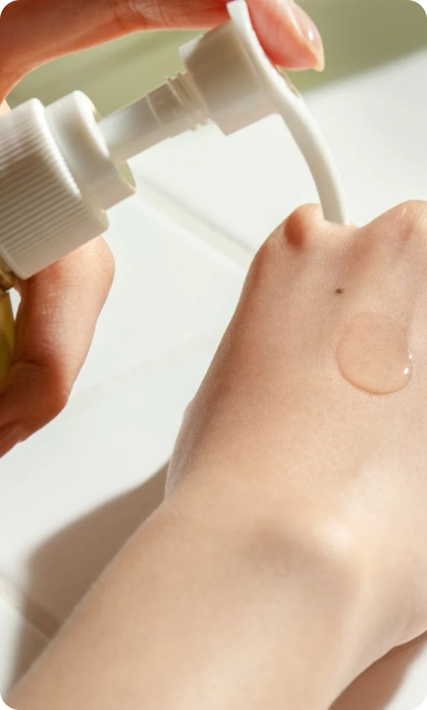

25 марта 2024
средства
Гидрофильные масла - это средства для очищения и увлажнения кожи, которые стали популярными благодаря своей эффективности и универсальности. Предлагаем разобраться, как гидрофильное масло действует на кожу, обязательно ли оно в уходе и кому может подойти.
Описание
Гидрофильные масла представляют собой масляные комплексы, способные растворять воду, что позволяет им эффективно удалять загрязнения с кожи, не нарушая ее естественный баланс.
Гидрофильные масла относятся к очищающим средствам и помогают эффективно удалять водостойкий макияж и прочие загрязнения из пор. Кроме того, они бережно ухаживают за кожей, способствуя проникновению в клетки эпидермиса полезных веществ. Они также способствуют увлажнению и питанию кожи, делая ее более мягкой, гладкой и упругой.
Гидрофильным, то есть, взаимодействующим с водой, масло делают эмульгаторы, которые добавляются в состав натурального косметического масла (масла оливы, жожоба, абрикосовой косточки и других). Благодаря им вещество можно легко смыть водой.

Применение
Гидрофильное масло может использоваться как первый этап очищения кожи перед нанесением пенки или геля для умывания. Или же, можно использовать его как основное очищающее средство в уходовой рутине. Кроме того, оно отлично заменит средства для снятия макияжа.
Считается, что гидрофильное масло не подойдет обладателям жирной кожи, однако это миф. Гидрофильное масло подходит любому типу кожи, главное — подобрать состав с подходящим натуральным маслом в составе.
Способ применения гидрофильного масла достаточно прост: массирующими движениями распределите небольшое количество средства по коже, а затем смойте теплой водой. По желанию можно использовать дополнительное средство для умывания.
Для сухой кожи подойдут гидрофильные масла, в составе которых содержатся натуральные масла, которые улучшают проникновение в эпидермис жирорастворимых витаминов. Отличным компонентом станет, например, масло абрикосовой косточки, кокосовое масло или масло авокадо.
Для жирной кожи рекомендуем выбирать масло ши или аргановое масло. Хорошими компонентами для средства для жирной кожи также станут масло чайного дерева, масло шиповника или миндальное масло, обладающие противовоспалительными свойствами. А вот хлопкового масла стоит избегать, поскольку оно может оставить на жирной коже эффект липкости.
Гидрофильное масло — бережное средство, поэтому оно подойдет и обладателям чувствительной кожи. Рекомендуем обратить внимание на масло жожоба, масло оливы, кокосовое и миндальное масло.